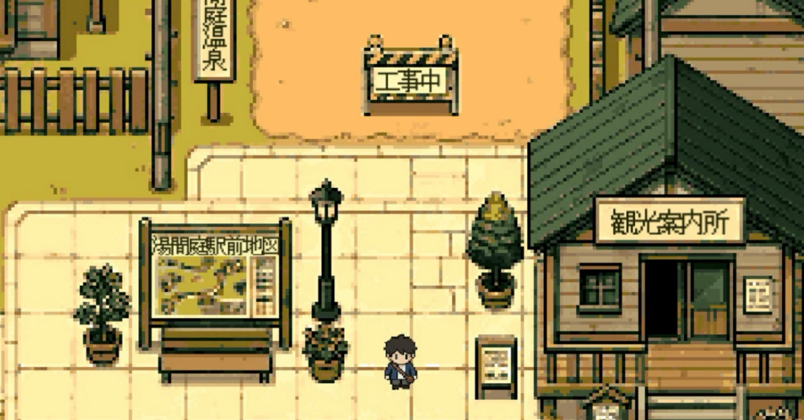

作品を並べるより、住める場所を作りたかった
これまでにつくったアプリのことを書いたnoteの記事が増えてきた。
最初は、マガジン機能できれいに並べてみた。
公開順に整理されると、これまでの思考の道のりが分かりやすく、感慨深いものを感じた。
でも、少し立ち止まった。
なんというか、整いすぎていた。
自分が作ってきたものは、もう少し寄り道があった。
「マガジン」というきれいな棚に収めると、
これまでにこだわってきた手触りとは少し違う気がした。
そこで今度は、ガラケー風のポートフォリオサイトを作ってみた。
小さな画面、限られたメニュー、少し懐かしいアイコン。
最近のWebサイトのように滑らかなものではなく、
狭い画面にぎゅっと詰まった、妙に懐かしいあの空気感。
ガラケー風サイトは気に入っていた。
しかし、残念ながらそれ以上に更新することはなかった。
最近は、作るものの幅が広がってきた。
「Yakitori Wars」「真夜中コーラ」のようなゲームや、
「#触れるらくがき」のようなゲーム未満、アプリ未満のもの。
そしてこれまでに作ったアプリについてのnote記事。
ただメニューに並べるだけではもの足りない。
棚ではなく、「場所」が欲しかった。
少し考えてみた。
それは自分の好きな「温泉街」にも似ている。
日帰り温泉、お土産屋さん、古いゲームコーナー、細い路地。
何でもあるわけではないけど、歩いているだけでワクワクする。
この店はまだやってるんだろうかと考えたり、
ちょっとした看板を読みながら、少しずつ歩いていく感じ。
自分の作品も、そんな場所に置いてみたいと思った。
noteの記事は町の掲示板のように。
ゲームは横丁の居酒屋に。
触れるらくがきは遊具のように。
そう考えると、今まで別々に作ってきたものが、
同じ町の中にあるように思えてきた。
ここまで来たら、後は早かった。
すぐに歩けるRPG風のサイトを作り始めた。
名前は、「湯間庭町（ゆまにわちょう）」。
湯気のぬくもりと、
何もない間や、小さな庭のような余白。
そんなものを置いておける名前にした。
今はまだ、AIで生成したマップに立って、少し移動できるだけ。
キャラクターも仮のもので、入れない場所もあるが、今のところ、それでいい気がしている。
最初から完成していなくてもいい。
ここから少しずつ進んでいけばいい。
最初はきれいなポートフォリオを作るつもりだったが、
作品を並べるよりも、作品たちが住める場所を作りたかったのかもしれない。
まだ駅前しかないこの場所で、
これから少しずつ、私だけの町おこしを始めていく。